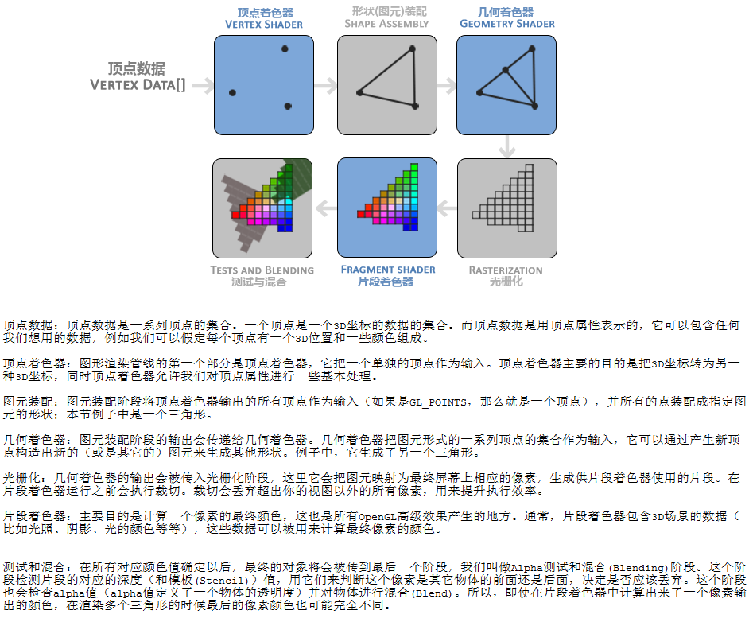
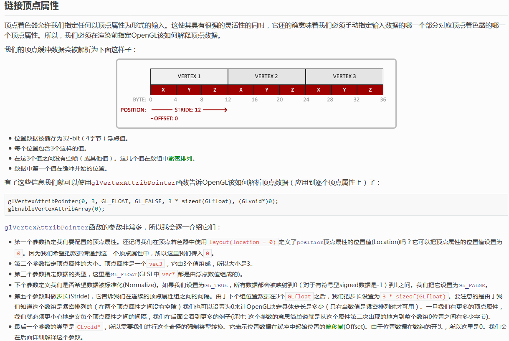

Qt for Opengl 你好，三角形
相信很多人都看过 learnopengl 的教程。但是很苦恼的是几乎所有的 OpenGL 教程都都会使用类似 GLEW、GLFW、GLAD 等等 GL 的第三方工具或者库。有什么办法能在 Qt 里面使用跨平台的 OpenGL Functions 呢？看这篇你就知道大概的一个流程，能对应着找到其他教程写法和对应Qt OpenGL的 api 联系。
前言
我们通过了解 OpenGL 发现，其实绘制一个三角形就是将3D坐标数据（顶点数据的集合）通过图形渲染管线绘制在屏幕上的有色2D像素的输出。图形渲染管线可以被划分为几个阶段，每个阶段将会把前一个阶段的输出作为输入。下面，你会看到一个图形渲染管线的每个阶段的抽象展示。要注意蓝色部分代表的是我们可以注入自定义的着色器的部分。

绘制三角形
首先我们要给 OpenGL 输入三个顶点，然后将每个顶点的的 Z 坐标设置为 0.0，这样每个顶点的深度都是一样的，使它看起来像是 2D 的。然后作为输入发送给图形渲染管线的第一个处理阶段：顶点着色器，它会在GPU上创建内存用于储存我们的顶点数据，还要配置OpenGL如何解释这些内存，并且指定其如何发送给显卡。顶点着色器接着会处理我们在内存中指定数量的顶点。
接着我们通过顶点缓冲对象(Vertex Buffer Objects, VBO)管理这个内存，它会在GPU内存(通常被称为显存)中储存大量顶点。使用这些缓冲对象的好处是我们可以一次性的发送一大批数据到显卡上，而不是每个顶点发送一次。而 Qt 这里为我提供了缓冲区的辅助类 QOpenGLBuffer。顶点缓冲对象的缓冲类型是 GL_ARRAY_BUFFER，最后，我们把定义的数据复制到当前绑定缓冲，然后创建一个顶点和片段着色器来真正处理这些数据（现代 OpenGL 需要我们至少设置一个顶点和一个片段着色器），接着我们编译这两个着色器，最后还要两个着色器对象链接到一个用来渲染的着色器程序中。顶点数组对象(Vertex Array Object, VAO)本系列除特殊说明不再涉及，因为 VAO 是 OpenGL CoreProfile 引入的一个特性，如果我们要使用必须使用 Qt 的 QOpenGLExtraFunctions 辅助类（提供对OpenGL ES 3.0和3.1 API的跨平台访问），这不适合跨平台的开发（很多移动设备只支持到 ES 2.0）。
现在我们已经把输入顶点数据发送给了GPU，并指示了 GPU 如何在顶点和片段着色器中处理它。但还没结束，我们还要告诉 OpenGL 该怎么解释内存中的顶点数据，以及它该如何将顶点数据链接到顶点着色器的属性上。顶点着色器允许我们指定任何以顶点属性为形式的输入，这使其具有很强的灵活性的同时，它还的确意味着我们必须手动指定输入数据的哪一个部分对应顶点着色器的哪一个顶点属性，甚至还会含有颜色等其他信息。这里我们通过链接顶点属性让顶点缓冲数据被正确解析。而 Qt 的 QOpenGLShaderProgram 辅助类不仅允许 OpenGL 着色器程序被链接和使用，还可以链接顶点属性。如果你的三角形的三个顶点的属性是下面这样的，那么你要按照下图来链接顶点属性。
1 | GLfloat vertices[] = { |

最后我们为避免顶点的重复使用（渲染的多个图形有很多顶点重复），我们还要使用索引缓冲对象(Element Buffer Object，EBO，也叫Index Buffer Object，IBO)。和顶点缓冲对象一样，EBO也是一个缓冲，它专门储存索引，OpenGL 调用这些顶点的索引来决定该绘制哪个顶点。相应的，Qt 中的 QOpenGLBuffer 辅助类也能很好的处理所谓的索引绘制。
Qt 中我们绘制的过程是这样的：新建顶点数据->顶点缓冲对象管理顶点数据->创建索引缓冲对象->创建顶点着色器和片段着色器并编译->创建着色器程序附加之前编译的着色器并激活->链接顶点属性。
往往你通过读一些 OpenGL 的教程很容易了解这个过程，对于不了解 Qt 的人用 Qt 封装的一系列 OpenGL API 来完成这个过程有些困难。不过我相信你认真研读过learnopengl 的《你好，三角形》教程后再来看这篇总结，然后找到一一对应的关系，相信你肯定可以豁然开朗。
扩展
如果你对本品还算感兴趣，想得到更多的扩展练习，我建议你试着用 QOpenGLExtraFunctions 辅助类增加 VAO 的使用，或者绘制一个由两个三角形组合而成的矩形（只有四个顶点数据，使用索引）。